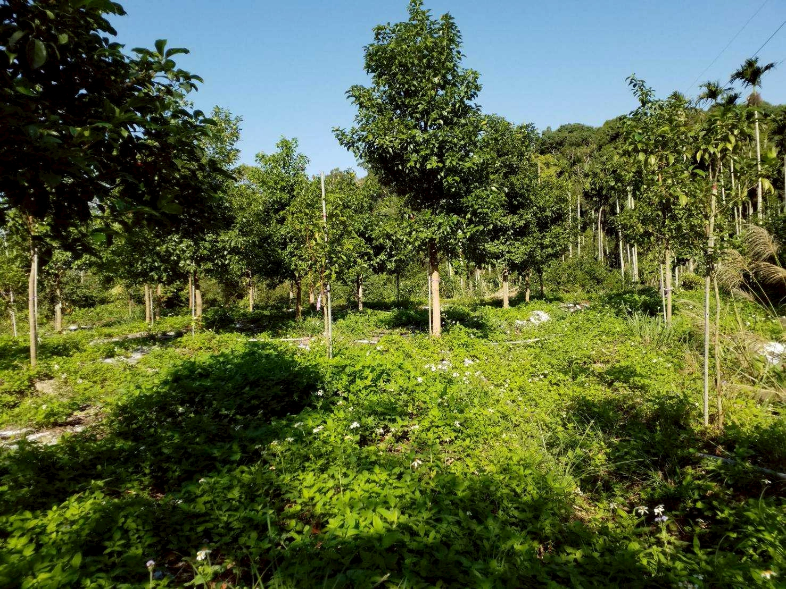
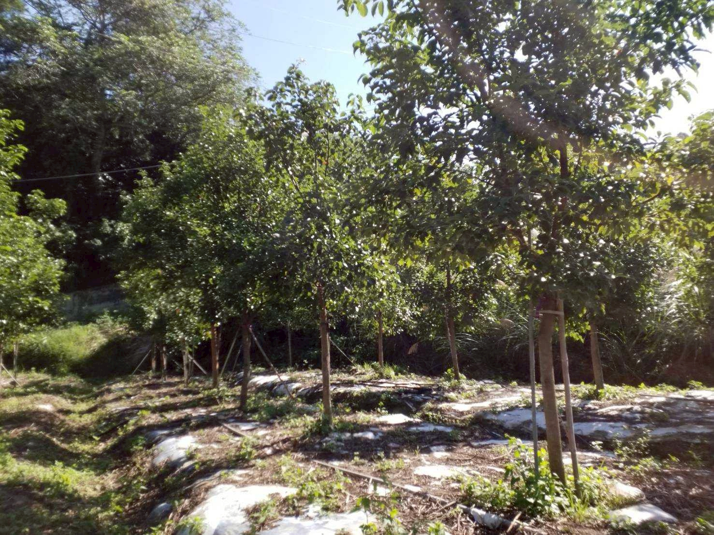

Our Story
我們的故事



「阿公的那塊地，
曾經種滿了檳榔。」
眼看土地漸漸荒廢，全家人做了一個決定 — 把檳榔砍掉，改種牛樟樹。
從申請廢園到種下第一批樹苗，過程充滿挑戰。牛樟樹生長緩慢，前幾年幾乎看不到成果，但我們相信這是對土地最好的選擇。
從此每個週末，大人小孩一起上山澆水、照顧樹苗。這不只是農活，更是凝聚家族的儀式。
幾年過去，當初的樹苗已長成翠綠的林子。牛樟葉加工成茶，是土地給我們的回饋，也是我們想與你分享的心意。